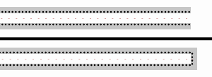

电磁场与电磁波¶
§1 向量分析¶
2022年3月3日。
物理上采用的基是单位化后的自然基（除以了度量因子（scale factor））。
详情请参考《A Practical Introduction to Differential Forms》。（在differential geometry - Short way to find the grad, curl and div in curvilinear coordiantes? - Mathematics Stack Exchange看到的）
§4 恒定磁场¶
有限长直导线产生的磁场¶
2022年6月7日。
可用 Biot–Savart–Laplace 定律积分，也可用 \(\curl \vb*{H} = \vb*{J} + \pdv{t} \vb*{D}\) 和对称性求解。
§5 静态场边值问题¶
镜像电荷相关的能量¶
2022年3月25日。
点电荷 \(Q\) 与无限大导体表面相距 \(d\)，求能量 \(E\)。（势能零点取 \(Q\) 在无穷远时的势能）
记 \(E_0 = Q^2 / \qty(4\pi\varepsilon_0 \cross 2d)\)。
用功度量¶
沿旋转对称轴，将 \(Q\) 自然移动到无穷远，此过程外力做的功是
答案认为，还需再将镜像电荷移至无穷远，故总功为 \(2 \times \frac12 E_0 = E_0\)。因此
这种做法恐怕讲不通。既然把力写成 \(1/(2x)^2\) 而非 \(1/(x+d)^2\)，就说明已经移动了镜像电荷，不该再乘 \(2\)；即便移动完 \(Q\) 后再移动镜像电荷，那移动镜像电荷时哪儿有别的力，怎么需要做功？怎么算出来的 \(E_0\)？
与镜像电荷的相互作用能¶
这种做法需要打个问号。我们将感应电荷等效为镜像电荷，是在电场、电势意义上等效的（严格来说是它们于场区产生的电场、电势）。能量方面的结论究竟是否适用于镜像电荷，需要另外论证。
电路里面就有电流、电压等效，而功率、能量不等效的模型。
镜像电荷的选择很任意，而能量唯一，所以我怀疑并不适用。
例如，把 \(Q\) 由点电荷换为气球（电荷在球面上均匀分布，总量仍为 \(Q\)）。这时镜像电荷当然可还选点电荷，但这里选成气球。现在，一边缓慢向远处移动球心，一边把气球吹大，保持气球距离导体表面最近的点不动。这样操作到最后，电荷也都移动到无穷远了。那么此过程中“镜像气球”怎么变化？至少有下面两种选择。
- 镜像气球同样一边移动，一边变大。
- 镜像气球大小不变，球心与原气球的球心关于导体表面对称。
这两种选择的能量变化不一样：前者互能、自能都没了；后者互能没了，自能还在。——构造不同的镜像电荷，可以算出不同的能量——这显然很荒谬。
实际电荷的相互作用能¶
实际电荷有两处：导体表面的感应电荷、点电荷 \(Q\)。
前者是面分布，\(\frac12 \iint \varphi \sigma\dd{S}\) 中的电势 \(\varphi\) 用总电势即可。（无论 \(\sigma\) 最后算出来是多少）注意导体延伸至无穷远，电势为零，因此 \(\frac12 \iint \varphi \sigma \dd{S} = 0\)。
后者是点分布，\(\frac12 q\varphi\) 中的电势 \(\varphi\) 应是其它电荷在此产生的电势。“其它电荷”就是“前者”，而感应电荷产生的电势等效为镜像电荷产生的电势，所以 \(\varphi = \frac{1}{4\pi\varepsilon_0} (-Q)/(2d)\)，\(\frac12 q\varphi = -\frac12 E_0\)。
二者相加，得
场能¶
前面都认为“电（势）能蕴含于电荷相互作用”，这里换种观点，认为“电（场）能蕴含于电场”。
题目中的场景记为 \(A\)。我们构造另一场景 \(A'\)：空间中没有导体，只有 \(\pm Q\) 两电荷，并且它们相距 \(2d\)。
对比 \(A\) 与 \(A’\)，发现半个空间中二者电场完全相同，另外半个空间中 \(A\) 无电场，\(A\) 有电场。因此 \(A\) 的能量是 \(A'\) 能量的一半。
再看 \(A'\) 的能量。静电场中无法区分两种观点，\(A'\) 的能量就是 \(\frac{1}{4\pi\varepsilon_0} (-Q)Q / (2d) = -E_0\)。
于是回到 \(A\)，
“点”电荷模型会导致发散的瑕积分，需替换为均匀带电球面模型。
不过不影响结论。只需注意势能零点并非指没有电场（炸碎带电球面），而是指两个带电球面相距很远（仍保留自能）。两种场景的势能零点也是 \(1:2\)，相减后还是 \(E = -\frac12 E_0\)。
§7 时变电磁场¶
一些模型¶
2022年6月12日。
| 理想媒质 | 一般导电媒质 | 理想导体 | |
|---|---|---|---|
| lossless | lossy | conducting | |
| \(\sigma = 0\) | \(\sigma \in \R^+\) | \(\sigma \to +\infty\) | |
| 体内 | \(\vb*{J} = \vb*0\) | \(\vb*{E} = \vb*{0}\) | |
| 体内时变场 | 衰减，磁场为主 | 全零 | |
| 表面自由电荷面密度 \(\rho_\text{surface}\) | 零 | ||
| 表面自由电流线密度 \(\vb*{J}_\text{surface}\) | 零 | 零 |
- \(\sigma\) 是和 \(\omega \varepsilon\) 比，相当于比传导电流和位移电流。
- \(\vb*{J_\text{surface}} = \sigma \vb*{E} \dd{h}\)，一般这是等价无穷小，理想导体是 \(0 \cdot \infty\) 型极限。
§8 平面电磁波¶
判断手性¶
2022年4月11日。
算法儿¶
已知 \(\eval{\vb*{E}}_{\vb* r} = \vb*{E} \exp(-j\vb*{k} \vdot \vb*{r})\)，其中 \(\eval{\vb*{E}}_\vb*{r}: \R^3 \to \C^3\)，\(\vb*{E} \in \C^3\)，\(\vb*{k} \in \R^3\)。
设
那么
- \(\Delta > 0\)：左旋；
- \(\Delta = 0\)：线极化；
- \(\Delta < 0\)：右旋。
依据¶
\(\Delta\) 只是算出了 \(\vb*E,\ \partial_t\vb*{E},\ \vb*{k}\) 的（负）手性。（其中 \(\vb*{E}\) 指 \(\R^3 \to \C^3\)，省略了。）
由 \(\eval{\vb*{E}}_\vb*{r}\) 可知
取特殊时空坐标，则
（当然 \(\omega > 0\)）
反射、折射系数¶
2022年6月14日。
这些系数对应电场振幅。反射是 reflect，折射是 transmit（投射）。
列方程时都是垂直于入射面的那个量比较简单。
-
垂直极化（电场垂直于入射面）
\(K = \cos\theta / \eta\)。
\[ \begin{array}{cccc} E_r & E_t & = & E_i \\ \hline K_r & K_t & & K_i \\ -1 & 1 & & 1 \end{array} \]\[ \begin{aligned} R &= \frac{K_i - K_t}{K_i + K_t}. \\ T &= \frac{K_r + K_i}{K_i + K_t}. \\ \end{aligned} \]\(T = R+1\)，\(K_i = K_r\)。
-
平行极化
\(K = \eta\cos\theta\)。
\[ \begin{array}{cccc} H_r & H_t & = & H_i \\ \hline K_r & K_t & & K_i \\ -1 & 1 & & 1 \end{array} \]\[ \begin{aligned} R &= \frac{K_i - K_t}{K_i + K_t}. \\ T &= \frac{\eta_2}{\eta_1} \frac{K_r + K_i}{K_i + K_t}. \\ \end{aligned} \]
垂直入射时（传播方向垂直于反射面），习惯上按垂直极化算，
光疏到光密时反射波有半波损失。
另外 \(\eta = \sqrt{\mu / \varepsilon}\)，\(n = c/v = \sqrt{\mu_r \varepsilon_r}\)。对于非磁性材料 \(\mu_r \approx 1\)，因此 \(\eta \propto n^{-1}\)。
§9 导行电磁波¶
矩形波导管¶
2022年6月12日。
最终问题归并、解耦为
其中 \({k_c}^2 = \gamma^2 + k^2\)，\(k^2 = \omega^2 \mu\varepsilon = \omega^2 / c^2\)。
在矩形波导管边界条件下，一般管的方向为 \(z\)，\(x,y\) 方向的宽度分别为 \(a,b\)，且习惯上 \(a > b\)。解系如下。
T for transversal, E for electric, M for magnetic.
\(k_x a = m\pi,\ k_y b = n\pi\)，其中 \(m,n \in \N\)，但 \(\text{TE}_{00}\)（\(m=n=0\)）、\(\text{TM}_{00}\)、\(\text{TM}_{10}\)、\(\text{TM}_{01}\) 不是时变场。
带下标 \(mn\) 的是波导中的量。
-
传输条件
\(\beta_{mn} \in \R\)（\(\gamma = j \beta_{mn}\)）。高频短波（粒子性强）易传播。
临界时 \(\beta_{mn} = 0\)，此时 \(\omega\) 的值是截止角频率
\[ \omega_{mn} = c \sqrt{{k_x}^2 + {k_y}^2}. \]也可用 \(\omega_{mn}\) 表示 \(\beta_{mn}\)：
\[ \beta_{mn} = \frac1c \sqrt{ \omega^2 - {\omega_{mn}}^2 } = \frac{\omega}{c} \sqrt{1 - \qty(\frac{\omega_{mn}}{\omega})^2} . \]\(\omega > \omega_{mn} > 0\)。
-
参数
- 相速度 \(v_\text{phase} = \omega / \beta_{mn} > c\)。
- 导波波长 \(\lambda_\text{guided} = v_\text{phase} / f > \lambda\)。
- 波阻抗 \(Z_\text{TE} = -E_x / H_y = \omega\mu/\beta_{mn} > \eta\)，\(Z_\text{TM} = -E_x / H_y = \beta_{mn} / \qty(\omega \varepsilon) < \eta\)。
传输线理论¶
2022年6月12日，2023年3月3日。
分布参数模型：\(R_0,\, L_0,\, G_0,\, C_0\)。
注意 \(u,i\) 不在同一方向上（\(u\) 从传输线的一条到另一条，而 \(i\) 沿着传输线），与低频电路中的单导线不同。
以下在复频域考虑。
记
\[ \underset{\text{传播}}\gamma = \underset{\text{衰减}}\alpha + j \underset{\text{相位}}\beta. \]Note: propagation, attenuation, phase.
则
\(\pdv{z} \leftrightarrow \mp\gamma\) 时，系数矩阵行列式为零，相应解是 \(u = \pm Z_c i\)。（特征线？）
也可独立出来，写成
以负载（load）处为原点，向负载传播为 \(+z\)，则可分解 \(U = U^+ + U^-\)，\(\boxed{U^\pm = U^\pm_\text{load} e^{\mp\gamma z}}\)，相应 \(Z_c I^\pm = \pm U^\pm\)，\(I = I^+ + I^-\)。
一些特殊解：
-
已知负载 \(U_l,\ I_l\)（\(U_l = Z_l I_l\)）
\(\boxed{U = U_l \cosh(\gamma z) - I_l Z_c \sinh(\gamma z)}\)，\(Z_c I = Z_c I_l \cosh(\gamma z) - U_l \sinh(\gamma z)\)。
易将之转换为行波叠加的形式。
-
已知源端 \(U_0,\ I_0\)
同上，只需把 \(l\) 换为 \(0\)，把 \(z\) 换成 \(z+d\)。
一些名词：
- 输入阻抗 \(Z_\text{in} \coloneqq U/I\)，可用 \(Z_l,\ Z_c\) 表示。
-
反射系数 \(\Gamma \coloneqq U^- / U^+ = \Gamma_l \exp(2\gamma z)\)。
\[ \Gamma_l \coloneqq \frac{U^-_l}{U^+_l} = \frac{U_l - I_l Z_c}{U_l + I_l Z_c} = \frac{Z_l - Z_c}{Z_l + Z_c}. \]
Smith圆图｜Wikimedia Commons
{kind=link}
-
工作状态：
- 行波 \(\Gamma_l = 0\)，阻抗匹配。
-
纯驻波 \(\abs{\Gamma_l} = 1\)，负载开路、短路或匹配纯电抗。

两种全反射情况｜Wikimedia Commons
箭头表示电场（电压），黑点表示电子（电流）。
上：终端开路；下：终端短路。
-
混合。
电压驻波比（voltage standing wave ratio）\(\rho \coloneqq U_\text{max} / U_\text{min}\)。可由 \(U = U^+ + U^- = U^+ \qty(1 + \Gamma)\) 进一步表示为 \(\qty(1+ \abs{\Gamma_l}) / \qty(1 - \abs{\Gamma_l})\)。
{kind=link}
后备箱¶
- 坐标单位向量不一定是常向量。
- 区分导体和电介质。
- “方向”对应单位向量。
- 区分瞬时向量和复向量。
- 注意导体有没有接地。
- 转换瞬时向量与复向量时，区分 \(\sin\) 和 \(\cos\)。